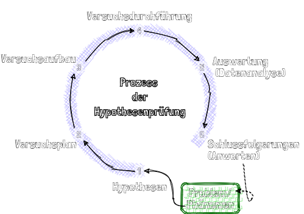
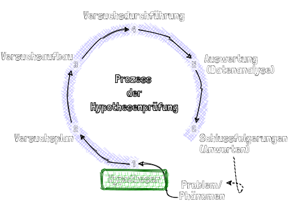
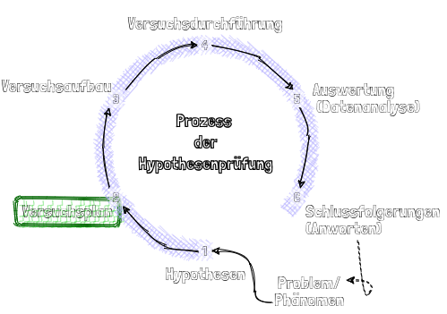
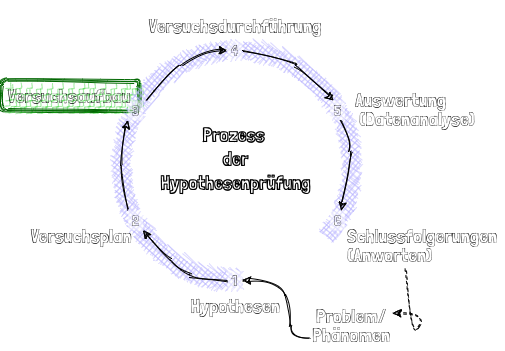
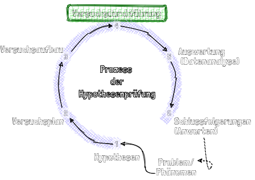
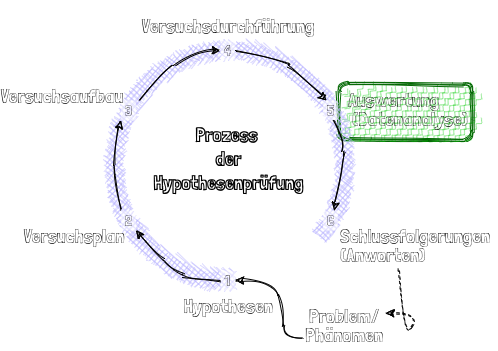
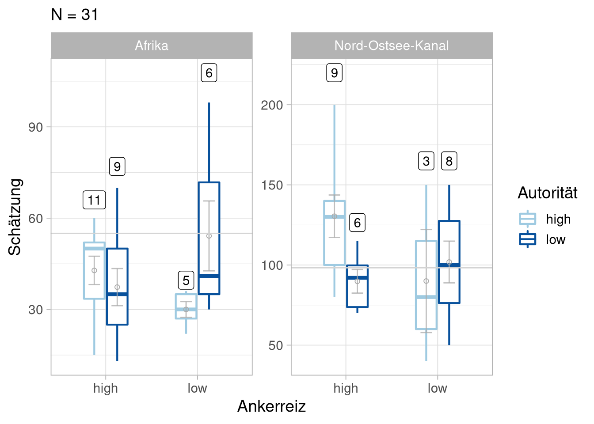
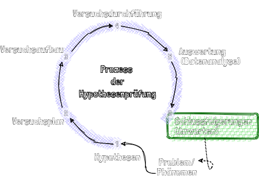

Hypothesen
Organisatorisches
Semesterplan
| Sitzung | Datum | Sitzungstitel |
|---|---|---|
| 1 | 02.11.2020 | Warum wissenschaftliche Psychologie |
| 2 | 28.11.2020 29.11.2020 | Hypothesen und der Prozess der Hypothesenprüfung |
| 3 | 28.11.2020 29.11.2020 | Experimentelles Vorgehen |
| 4 | 28.11.2020 29.11.2020 | Literaturrecherche |
| 5 | 28.11.2020 29.11.2020 | Operationalisieren und Messen |
| 6 | 12.12.2020 13.12.2020 | Experimentelle Versuchspläne |
| 7 | 12.12.2020 13.12.2020 | Störvariablen im Experiment |
| 8 | 12.12.2020 13.12.2020 | Nicht-experimentelle Versuchspläne |
| 9 | 12.12.2020 13.12.2020 | Material und Stichprobe |
| 10 | 23.1.2021 24.1.2021 | Auswertung, Darstellung und Interpretation |
| 11 | 23.1.2021 24.1.2021 | Ethische Probleme im Versuch |
| 12 | 23.1.2021 24.1.2021 | Publikationsprozess |
| 13 | wird noch bekannt gegeben | Vorstellung der Gruppenarbeiten |
| 14 | wird noch bekannt gegeben | Klausurvorbereitung |
Wiederholung
Wissenschaftliche Psychologie
Grundbegriffe wissenschaftlich-psychologischer Methodik
Phänomen, Theorie, Modell
Fragestellung, Hypothesen, Variablen
Kritischer Rationalismus als normative Wisssenschaftstheorie
Prozess der Hypothesentestung als wissenschaftliche Methode der Wahl
Hypothesen
Wie läuft der Prozess der Hypothesenprüfung ab?

Abb. 4: In Anlehnung an Reiß and Sarris (2012)

Experiment zur Ankerheuristik Problem/Phänomen:
Alltagsbeobachtung: Wenn man etwas nicht weiß, orientiert man sich oft an dem, was andere sagen.
Fragen:
- Was ist die Ursache dafür?
- Wie beeinflusst uns das Urteil anderer?
- In welche Richtung wird unser Urteil verzerrt?
- Spielt es eine Rolle, wer etwas sagt?
- Wie gut können wir schätzen?
- Welche psychischen Mechanismen spielen beim Schätzen eine Rolle?
- Was ist der „Sinn" dieses „Urteilsfehlers"?
- …

Experiment zur Ankerheuristik Theorie:
Beim Schätzen orientieren sich Personen oft an Heuristiken.
Die Ankerheuristik ist eine Urteilsheuristik, bei der sich das Urteil an einem willkürlichen „Anker" orientiert. Die Folge ist eine systematische Verzerrung in Richtung des Ankers (Kahneman 2012).
Laien orientieren sich bei ihren alltagswissenschaftlichen Annahmen oft an Autoritäten. Die Folge ist eine Verzerrung von Urteilen in Richtung des Urteils einer anerkannten Autorität (Huber 2019).
Experiment zur Ankerheuristik
Inhaltliche Hypothesen:
Ankerheuristik: Ein großer Ankerreiz führt zu einer größeren Schätzung als ein kleiner Ankerreiz.
Autorität: Personen verzerren ihre Schätzung stärker in Richtung des Ankers, wenn der wahrgenommene Autoritätsstatus der Ankerperson hoch ist als wenn er klein ist.
Experiment zur Ankerheuristik
Inhaltliche Hypothesen \(\leftrightarrow\) Variablen:
Ankerheuristik:
Unabhängige Variable: Größe des Ankerreizes
Autorität:
Unabhängige Variable: Autoritätsstatus der Ankerperson
Urteil:
Abhängige Variable: Schätzung

Experiment zur Ankerheuristik
Experiment:
Manipulation der unabhängigen Variable(n)
Größe des Ankers, Autoritätsstatus ‘Maximiere Varianz’
Kontrolle von Störvariablen
z.B. Vorannahmen bzgl. Experiment, Vorwissen, Intelligenz, Autoritätsgläubigkeit, Geschlecht, Müdigkeit ‘Kontrolliere Varianz’
Messung der abhängigen Variable
Schätzung
‘Minimiere Fehlervarianz’
Experiment zur Ankerheuristik
Versuchsplan (Design) Manipulation der unabhängigen Variable(n)
Zweifaktorielles Design mit zwei „Between-Subject"-Faktoren
Faktor 1: Größe des Ankerreizes / Stufen: groß vs. klein
Faktor 2: Autoritätsstatus / Stufen: niedrig vs. hoch
Kontrolle von Störvariablen Durch Randomisierung wird der Einfluss von Personenmerkmalen (einigermaßen) kontrolliert
Durch zwei Verschiedene AVs wird versucht zumindest einen Teil des Effekts möglichen Vorwissens zu kontrollieren.
Messung der abhängigen Variable Durch Eingeben der Schätzung

Experiment zur Ankerheuristik - NOK
Operationalisierung
Unabhängige Variablen: Größe des Ankerreizes groß= 200 km vs. klein= 50 km
Autoritätsstatus niedrig= 1. Vorstand des Bayerischen Dachshundklubs vs. hoch= ehemaliger Ministerpräsident
Störvariablen: VP-interne Störvariablen wurden durch Randomisierung kontrolliert.
Abhängigen Variable: Wie lang ist der Nord-Ostsee-Kanal, was schätzen Sie? ____ km
Experiment zur Ankerheuristik - Afrika
Operationalisierung
Unabhängige Variablen: Größe des Ankerreizes groß= 85 km vs. klein= 25 km
Autoritätsstatus niedrig= Donald Trump vs. hoch= Nelson Mandela
Störvariablen: VP-interne Störvariablen wurden durch Randomisierung kontrolliert. Heterogenes Vorwissen durch wurde unbekanntes Thema kontrolliert.
Abhängigen Variable: Wie viele Länder liegen auf dem afrikanischen Kontinent, was schätzen Sie? ____ Länder
Experiment zur Ankerheuristik - Afrika
Versuchspersonen
Als Ad-hoc-Stichprobe, anfallende Stichprobe, Gelegenheitsstichprobe, aber auch manchmal treffend als Bequemlichkeitsauswahl bezeichnet man in der psychologischen Forschung eine willkürliche Untersuchung von gerade zur Verfügung stehenden Proband*Innen.(In der Regel Psychologie-Studierende)
Nachteile: Schlechte Kontrolle von Störvariablen, u.U. geringe Generalisierbarkeit

Experiment zur Ankerheuristik
Aufklärung und Instruktionen Nicht standardisierter verbaler Aufruf, VL umreißt Versuchsbedingungen. Standardisierter Aufgabentext bei zufällig zugeteilter Aufgabe.
Ablauf Aufruf der Website, Ausfüllen, Abschicken

Experiment zur Ankerheuristik
Schritt 1: Datenaufbereitung Schätzungen von Server abfragen, Ausreißer entfernen.
Schritt 2: Überprüfung der Voraussetzungen
- Normalverteiltheit
- Varianzhomogenität
- Unabhängigkeit
Schritt 3: Deskriptive und Inferenzstatistik
- Mittelwerte, Standardabweichungen . . .
- Zweifaktorielle Varianzanalyse
Experiment zur Ankerheuristik

NOK
| Effect | DFn | DFd | F | p | ges |
|---|---|---|---|---|---|
| anchor | 1 | 22 | 0.319791 | 0.5774558 | 0.0143277 |
| authority | 1 | 22 | 1.838841 | 0.1888431 | 0.0771363 |
| anchor:authority | 1 | 22 | 2.749719 | 0.1114632 | 0.1111010 |
Es gab weder einen signifikanten Haupteffekt des Faktors Größe des Ankerreizes (\(F_{1,22}=0.32, p = 0.32, \hat{\eta}^2 =0.014\))
noch des Autoritätsstatus (\(F_{1,22}=1.84, p = 1.839, \hat{\eta}^2 =0.077\)).
Auch die Interaktion wurde nicht signifikant
(\(F_{1,22}=2.75, p = 2.75, \hat{\eta}^2 =0.111\)).
Afrika
| Effect | DFn | DFd | F | p | ges |
|---|---|---|---|---|---|
| anchor | 1 | 27 | 0.1144927 | 0.7377033 | 0.0042226 |
| authority | 1 | 27 | 0.5764964 | 0.4542672 | 0.0209054 |
| anchor:authority | 1 | 27 | 4.5548807 | 0.0420580 | 0.1443479 |
Es gab weder einen signifikanten Haupteffekt des Faktors Größe des Ankerreizes (\(F_{1,27}=0.11, p = 0.114, \hat{\eta}^2 =0.004\))
noch des Autoritätsstatus
(\(F_{1,27}=0.58, p = 0.576, \hat{\eta}^2 =0.021\)).
Die Interaktion ist aber signifikant geworden
(\(F_{1,27}=4.55, p = 4.555, \hat{\eta}^2 =0.144\)).

Experiment zur Ankerheuristik
Inhaltliche Hypothesen
Ankerheuristik: Ein großer Ankerreiz führt zu einer größeren Schätzung als ein kleiner Ankerreiz.
\(\rightarrow\) hat sich nicht bewährt
Autorität: Personen verzerren ihre Schätzung stärker in Richtung des Ankers, wenn der wahrgenommene Autoritätsstatus der Ankerperson hoch ist als wenn er klein ist
\(\rightarrow\) hat sich nicht bewährt
- Aber zumindest im Afrika-Fall wurde die Interaktion signifikant, was darauf hindeutet, dass es ein nicht rein additives Zusammenwirken von Anker und Autoritätsreiz gibt.
Experiment zur Ankerheuristik Weder der Einfluss der Ankerheuristik, noch die Autoritätsverzerrung konnte so richtig gezeigt werden. Warum?
Ist die Hypothese unbrauchbar, oder…
brauchen wir einfach eine größere Testpower? (Effektgröße, N, Fehler)
Lösung:
- Vergrößerung der Primärvarianz (Effekt\(\uparrow\)),
- Verkleinern des Messfehlers (N\(\uparrow\), Fehler\(\downarrow\))
haben wir irgendwelche Störvariablen (z.B. Vorwissen, technische Probleme) übersehen?
Lösung:
- Kontrolle der Störvariablen (z.B. Vorwissen, Vorurteile, usw. abfragen und ausbalancieren)
Hypothesen
Definition „Hypothese"
Wie kommt man zu Hypothesen?
- Unsystematische vs. systematische Ansätze
- Rolle von Induktion und Deduktion
- Häufige Fehler bei der Generierung von Hypothesen
Wie überprüft man Hypothesen (nicht)?
- Ungültige „Beweise"
- Prozess der wissenschaftlichen Hypothesenprüfung
Bewertung von Hypothesen und deren Überprüfung
- Vorbedingungen für Überprüfbarkeit
- Qualitätskriterien für Hypothesen und deren Überprüfung
Definition Hypothese:
- Kurzversion: Eine Hypothese ist eine vermutete Antwort auf eine Frage.
- Langversion: Eine Hypothese ist eine beliebige Aussage, die man provisorisch für bestimmte Zwecke als wahr annimmt, auch wenn man nicht oder zumindest nicht genau weiß, ob sie wirklich wahr oder falsch ist.
Zweck von Hypothesen:
- Hypothesen ermöglichen Vorhersagen im Rahmen einer Hypothesenprüfung.
Vorsicht!
- inhaltliche Hypothesen \(\neq\) statistische Hypothesen
Wie kommt man zu Hypothesen?
Unsystematischer Ansatz:
- Alltagspsychologie
- Neugier, Intuition, Kreativität
- Diskussion mit Kollegen
- Zufall
Systematischer Ansatz:
- Sammlung von Fallbeschreibungen und Verallgemeinerung (Induktion)
- Explorative Studien, Erkundungsexperimente, Umfragen
- Replikation von bekannten Untersuchungen
- Klärung von widersprüchlichen Ergebnissen
- Ableitung aus Theorien (Deduktion)
Exkurs Induktion & Deduktion
Wie kommt man zu Hypothesen/Theorien?
Abb. 5: In Anlehnung an Reiß and Sarris (2012)
Wie überprüft man Hypothesen (nicht)?
Mit ‘Methodik’ der Alltagspsychologie \(\rightarrow\) erste Sitzung
Wie läuft der Prozess der Hypothesenprüfung ab?
Bewertung von Hypothesen und deren Überprüfung:
Vorbedingungen:
- Widerspruchsfreiheit
- Kritisierbarkeit (Falsifizierbarkeit)
- Operationalisierbarkeit
- Aufstellung der Hypothese VOR der Überprüfung
Qualitätskriterien:
- Möglichst wenig Annahmen (Occam’s Razor)
- Möglichst strenge Prüfung (Bewährungsgrad, Bewährungsbereich)
Operationalisierung = Messbarmachung
Welche Rolle spielt die Operationalisierung von Hypothesen für deren Überprüfung? Beispiel: Welchen Einfluss hat Ängstlichkeit auf Lernen?

Welche Rolle spielt die Operationalisierung von Hypothesen für deren Überprüfung?
Art und Weise der Operationalisierung der theoretischen Konzepte (Lernen) \(\rightarrow\) Geltungsbereich des erhobenen experimentellen Befundes (Konditionierung vs. Schule)
Bewertung von Hypothesen und deren Überprüfung:
Vorbedingungen:
- Widerspruchsfreiheit
- Kritisierbarkeit (Falsifizierbarkeit)
- Operationalisierbarkeit
- Aufstellung der Hypothese VOR der Überprüfung
Qualitätskriterien:
- Möglichst wenig Annahmen (Occam’s Razor)
- Möglichst strenge Prüfung (Bewährungsgrad, Bewährungsbereich)
Aufstellung der Hypothese VOR der Überprüfung
Ein Bogenschütze, der sein Ziel nach dem Schießen erklärt, trifft zwar immer, ist aber nicht unbedingt gut im Bogenschießen.
Occam’s Razor
Numquam ponenda est pluralitas sine necessitate
Ungefähr-Übersetzung:
Eine Mehrheit darf nie ohne Not zugrunde gelegt werden.
Ausblick
- Grundidee des Experimentes und Typen von Experimenten
- Vertiefung: unabhängige und abhängige Variablen
- Reiz-, Reaktions-, Organismusvariablen
- Störvariablen: Konfundierung vs. Kontrolltechniken
- Datenfluktuation: Max-Kon-Min-Prinzip
- Interne und externe Validität